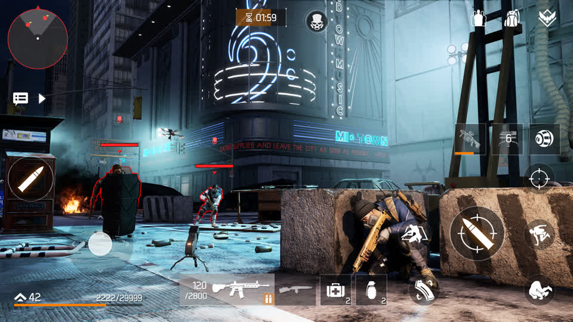
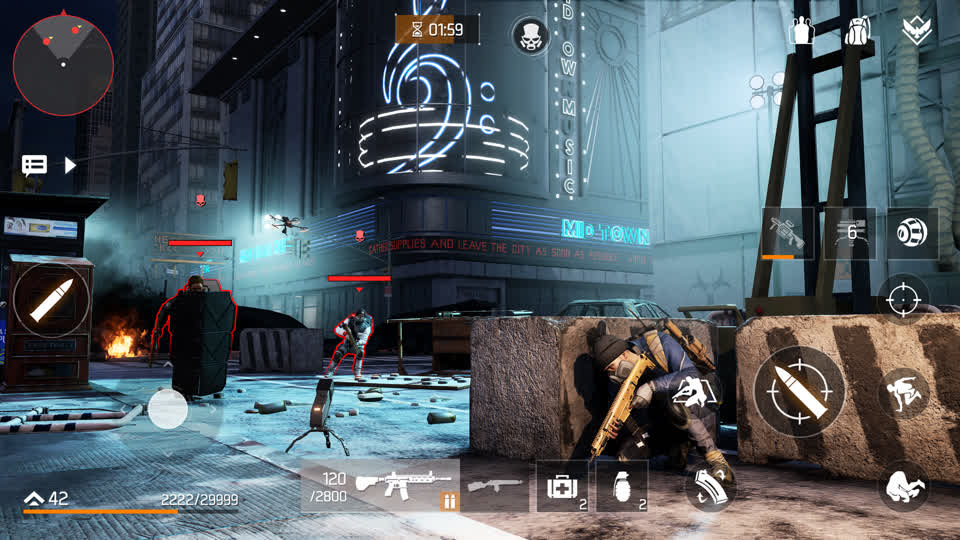
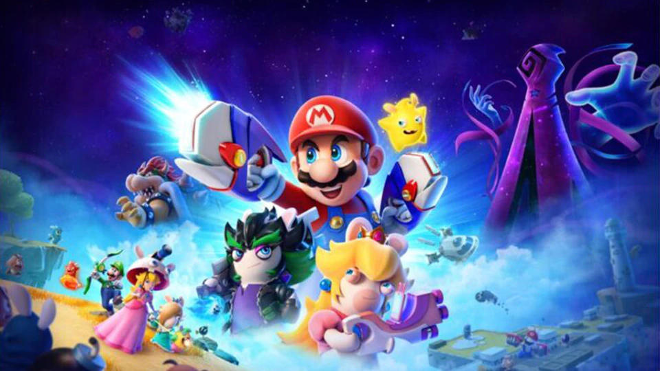
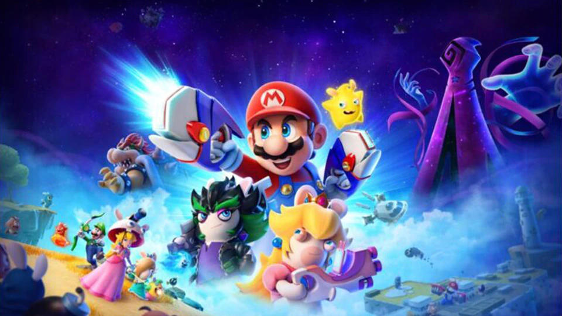
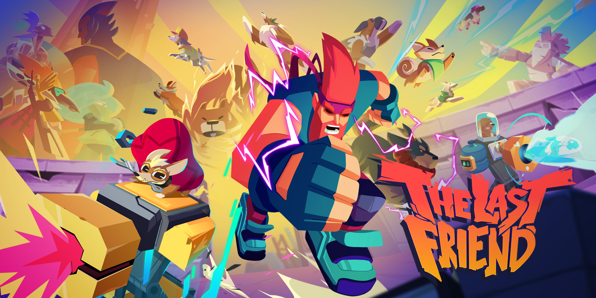
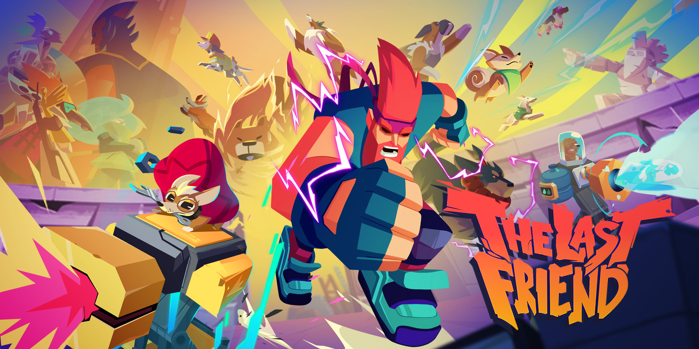

Une entreprise informatique de cette décennie
Innovations, les produits d’ubisoft a cette époque
Acquisition de Red Storm entertainment et de la licence Tom Clancy’s

Création de Rayman en 1995 . En 10 ans, le jeu se vendra à 15 millions d’exemplaires
2007 succès mondial de Assassin's Creed qui fait connaître ubisoft internationalement

2011 : lancement de sa société de production cinématographique
Tableau des jeux produit sur cette décennie
| 1990 | Back to the Golden Age | Power Concept | Amstrad CPC, Atari ST |
| RanX: The Video Game | Ubisoft | Amiga, Atari ST, DOS | |
| Sauvez Yurk | Amstrad CPC | ||
| Unreal | Art & Magic | DOS, Amiga, Atari ST | |
| 1991 | Great Courts 2 | Blue Byte Software | Amiga, Atari ST, DOS |
| Starush | Ubisoft | Amiga | |
| Celtic Legends | Ubisoft | Amiga | |
| 1992 | B.A.T. II: The Koshan Conspiracy | Computer's Dream | Amiga, Atari ST, DOS |
| 1994 | Street Racer | Vivid Image | Amiga, DOS, Mega Drive, PlayStation, Saturn, Super Nintendo, Game Boy |
| 1995 | Rayman | Ubisoft Montpellier | DOS, Jaguar, PlayStation, Saturn, Windows, Game Boy Color, Gizmondo, DSiWare, iOS, Android, Gameboy Advance |
| Kiyeko et les Voleurs de nuit | Ludimédia | Windows | |
| 1996 | Amazing Learning Games With Rayman | Ubisoft | PlayStation, Windows, DOS |
| Marine Malice 2 : Le Mystère de l'École Hantée | Humongous | Windows, Mac OS | |
| Secrets of the Luxor | Mojave | ||
| The Elder Scrolls II: Daggerfall | Bethesda Softworks | MS-DOS | |
| 1997 | F1 Pole Position 64 | Human Entertainment | Nintendo 64 |
| F1 Racing Simulation | Ubisoft | Windows | |
| Grandia | Game Arts | Saturn, Playstation | |
| Les 9 Destins de Valdo | Ubisoft | Windows | |
| Pod: Planet of Death | |||
| Rayman Éveil | Ubisoft | ||
| Sub Culture | Criterion Games | ||
| 1998 | Alexandra Ledermann : Équitation Passion | Midas Interactive Entertainment | PlayStation, Windows |
| Asghan: The Dragon Slayer | Silmarils | Windows | |
| Buck Bumble | Argonaut Software | Nintendo 64 | |
| Les Dictées de Rayman | Ubisoft | Windows | |
| Laura et le Secret du diamant | Ubisoft Montréal | Windows | |
| Redline Racer | Criterion Games | Windows, Dreamcast | |
| S.C.A.R.S. | Vivid Image | Nintendo 64, PlayStation, Windows | |
| Speed Devils | Ubisoft Montréal | Dreamcast | |
| The Settlers III | Blue Byte Software | Windows | |
| Tom Clancy's Rainbow Six | Red Storm Entertainment | ||
| Yannick Noah All Star Tennis '99 | Smart Dog | Nintendo 64, PlayStation | |
| 1999 | Evolution: The World of Sacred Device | Sting Entertainment | Dreamcast, Neo Geo Pocket Color |
| Evolution 2: Far Off Promise | Dreamcast, Microsoft Windows | ||
| Gerry Lopez Surf Riders | ACOT | PlayStation | |
| Hello Kitty's Cube Frenzy | Torus Games | Game Boy Color, PlayStation | |
| Hell-Copter | Drago Entertainment | Windows | |
| Hype: The Time Quest | Playmobil Interactive | PlayStation 2, Windows, Game Boy Color | |
| Monaco Grand Prix: Racing Simulation 2 | Ubisoft | Windows, Dreamcast, Nintendo 64, PlayStation | |
| Rayman 2: The Great Escape | Ubisoft Montpellier | Dreamcast, Nintendo 64, Windows, Game Boy Color, PlayStation, PlayStation 2, Nintendo 3DS, Nintendo DS, iOS, Android | |
| Rayman Accompagnement Scolaire CP | Ubisoft | Windows | |
| Rayman Accompagnement Scolaire Maternelle | Ubisoft | Windows | |
| Requiem: Avenging Angel | Cyclone Studios | Windows | |
| Rocket: Robot on Wheels | Sucker Punch Productions | Nintendo 64 | |
| Tom Clancy's Rainbow Six: Rogue Spear | Red Storm Entertainment | Windows, PlayStation, MacOS, Dreamcast, Game Boy Advance | |
| Tonic Trouble | Ubisoft Montréal | Nintendo 64, Windows, Game Boy Color |
Présentation de l'entreprise
Créer en 1986 par Yves Guillemot et Michel Guillemot. Son siège social se situe à Montreuil et la nationalité de l’entreprise est française. En 1992 ubisoft ouvre son premier studio de développement à Paris

il y a actuellement 21 000 employés. La capitalisation de l’entreprise est de 10,288 milliards € en 2021
Leur domaine est l’industrie vidéoludique
Elle fonde Ubi Pictures en 1994
Logo de 1989-1994
Logo de 1994-2003
Logo de 2003-2017

Logo de 2017 à aujourd'hui
Activités
Ubisoft est l'un des principaux acteurs français du domaine des jeux : c'est le troisième plus gros développeur de jeux vidéo au monde (derrière Activision et Electronics Arts). Il est également le troisième éditeur indépendant en Europe et aux États-Unis. Le groupe possède la deuxième force de production interne de jeux vidéo dans le monde avec 26 studios dans 19 pays (tel qu’au Canada, au Mexique, en France ou encore au Japon). Ubisoft possède également des filiales de production et de distribution respectivement dans 25 et 55 pays.
Evolution du CA trimestriel pour l’année 2020-2021 et l’année 2021-2022 :
Evolution du CA annuel pour l’année 2020-2021 et l’année 2021-2022 : (+ graphe)
Le chiffre d’affaires par source de revenus d’Ubisoft se divisent entre :
Stratégie
Ubisoft présente une stratégie sur le moyen et long terme à ses actionnaires. L'éditeur français a pour ambition de continuer à grandir à un rythme très soutenu en se basant sur une stratégie visant à rallonger le cycle commercial de ses jeux
 

Le jeu sur mobile est au cœur de la stratégie d’Ubisoft. Avec la prise de position de Tencent dans son capital, l’entreprise française va continuer d’étendre ses franchises au secteur très lucratif du jeu vidéo sur smartphone. En 2022, ce support générera plus de revenus que sur consoles ou PC, avec 103 milliards de dollars selon les prévisions
Le PDG d’Ubisoft en a bien conscience. Le marché asiatique est le plus grand consommateur de jeux mobiles, ce qui pousse la société à créer des titres adaptés

Elle s’essaye aux services par abonnement avec son offre Ubisoft+, elle continue de développer des jeux free-to-play qui font partie des titres les plus joués, et s’intéresse au cloud gaming, le studio français vient d’ailleurs de dévoiler une collaboration avec le géant du streaming Netflix
Actualité
Ubisoft va ouvrir son nouveau département créatif groupe pour mieux soutenir et s'aligner avec sa stratégie de portefeuille de jeux. Cette évolution permet de mieux accompagner des équipes créatives. L'ambition est de stimuler la créativité et de viser l'excellence dans la qualité d'exécution et le lancement des jeux
 

Caloiaro souhaite également diversifier encore davantage une sélection qui ne manque pourtant pas de variété. Cela passe notamment par l'ajout de jeux indépendants au catalogue du service d'abonnement Ubisoft+, ou encore par la collaboration avec d'autres partenaires créatifs, comme Nintendo (dans Mario + The Lapins Crétins).
Des jeux indépendants arrivent chez Ubisoft ! Une sélection de jeux indépendants est d'ores et déjà disponible sur Ubisoft+ et à l'achat sur Ubisoft Store. D'autres jeux seront disponibles ultérieurement. Pour l'instant, vous pouvez jouer à The Last Friend, un jeu d'arcade The Stonebot Studio, A Normal Lost Phone, un jeu de fiction interactif du studio Accidental Queens, ainsi qu'à Astrologaster de Nyamyam, Evan's Remains de Maitan69, Fell Seal : Arbiter's Mark de 6 Eyes Studio et Lake de Gamious.
 


Joshua Romoff, expert en données d'Ubisoft La Forge, nous parle du développement d'une technologie pour créer des PNJ aux comportements plus vivants et plus réalistes
Ecologie
C’est en 2020 qu’Ubisoft s’est engagé a renforcé son engagement à participer à la neutralité carbone mondiale dans le cadre du programme 'Play Green'. Ce programme se divise en deux piliers :
Réduire l’empreinte carbone en se focalisant sur 4 axes :
- transition vers les énergies renouvelables
- la sobriété numérique
- l’efficacité
- évoluer faire des alternatives à faible émission de carbone
De plus, Ubisoft adhère au Green IT en mettant en place des mesures intéressantes tels que :
- la suppression des notices/versions papiers des manuels de jeux
- l’adoption de nouveaux boitiers DVD constitués à 100% de polypropylène recyclé
Engager une dynamique positive auprès des employés afin de sensibiliser et participer à la protection de notre planète